0 Introduction
0.1 Qu’en pensez-vous ?
Elle ne s’est pas rendue compte de son erreur.
Tous ces jours qui se sont succédés sans qu’il ne se passe rien.
C’est une maitresse qu’ont toujours craint les enfants.
T’as pas vu la tête qu’il a fait ?
Des chants et des danses bretons.
Certains régions et départements sont plus touchés que d’autres.
Tous les matins, je maudis ce putain de réveil.
C’est encore nous qui avons raison !
C’est le jour et la nuit !
Bon, on va y aller.
Je viendrai en scooter.
Mon fils se déplace en trottinette éléctrique.
Je m’en rappelle.
Tu sais quoi ?
0.2 Imaginez la situation
Il fallait que tu le lisses.
Elle préférait que nous la vissions demain.
0.3 Qui ?
Jérémy Genette, Dr. en Linguistique (Université d’Anvers)
Phonéticien et phonologue (de laboratoire)
et vous ?
0.4 Pourquoi ce cours ?
En réponse à une vidéo descriptive réalisée par un linguiste (Lien vers la vidéo)
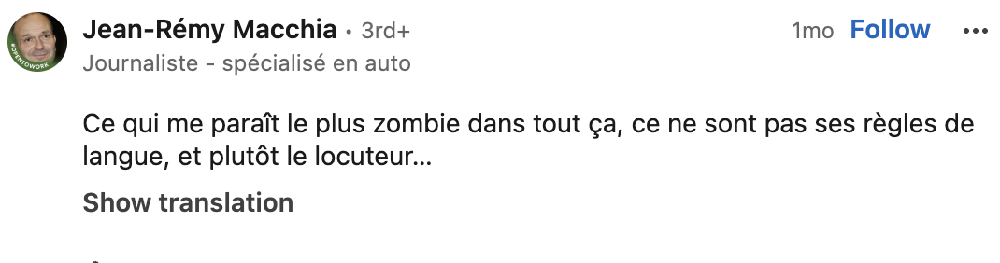
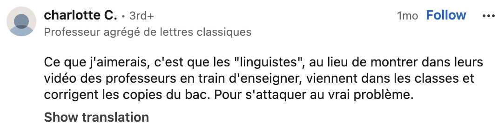
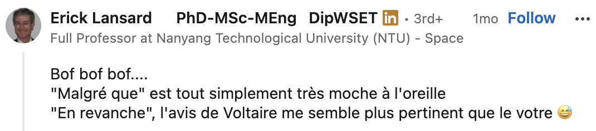
0.5 Pourquoi ce cours change de phénomène chaque semaine
Chaque séquence de ce cours porte sur un phénomène grammatical différent : la négation, l’accord du participe passé, la liaison, le subjonctif, le futur, le voisement en Belgique francophone… À première vue, on pourrait croire à un catalogue de curiosités grammaticales sans lien entre elles.
Ce n’est pas le cas. Sous des objets différents, c’est le même geste méthodologique qui se répète et se complexifie de semaine en semaine : partir d’une question de recherche, constituer et interroger un corpus, analyser les résultats à la lumière de facteurs sociaux, et en rendre compte. Le phénomène grammatical du jour est un prétexte pour installer une étape précise de ce parcours.
C’est ce parcours qu’il faut garder en tête toute l’année. Il sera réaffiché à chaque séance, avec l’étape du jour surlignée.
0.6 Le processus de recherche en linguistique de corpus
- Question de recherche → variable linguistique Partir d’une observation ou d’une intuition, la transformer en question précise et en variable mesurable.
- Choix et constitution du corpus Représentativité, registres, métadonnées disponibles.
- Opérationnalisation → requêtes Traduire la question en regex, en filtres, en concordances.
- Échantillonnage Comment sélectionner un sous-ensemble gérable et représentatif quand le corpus complet est trop grand — ou quand le phénomène cherché est rare.
- Annotation Manuelle (grille de codage) et/ou automatique (POS-tagging, etc.).
- Évaluation de la fiabilité Kappa (accord entre annotateurs), precision/recall (évaluation d’un système automatique).
- Analyse statistique et interprétation Lecture de tableaux croisés, tests statistiques, mise en relation avec les facteurs sociogéographiques.
- Rédaction et communication des résultats Structurer, présenter, discuter les limites.
Ce même parcours, vous l’appliquerez vous-mêmes, de bout en bout, sur votre propre variable de recherche pour le projet final.
0.7 Norme vs usage : le cadre théorique du semestre
Le mot « norme » recouvre en réalité trois choses différentes, qu’il faut apprendre à distinguer :
- Norme prescriptive : ce que disent les grammaires, les manuels, l’Académie française — ce qu’on « devrait » dire.
- Norme statistique : ce qui est effectivement, majoritairement, produit par les locuteurs.
- Norme sociale / évaluative : ce qui est jugé correct ou incorrect par les locuteurs eux-mêmes, indépendamment de ce qu’ils produisent réellement.
Ces trois normes divergent souvent. L’exemple classique : l’accord du participe passé avec l’auxiliaire avoir est une règle prescriptive fermement enseignée, mais largement minoritaire dans l’usage oral réel.
On y ajoute la notion de variable sociolinguistique : une même fonction ou un même sens réalisé par plusieurs variantes en concurrence (ex. ne…pas / pas seul), dont la distribution est corrélée à des facteurs sociaux
0.8 La plateforme ORFEO, en bref
ORFEO est le corpus que vous utiliserez toute l’année. Points à retenir dès aujourd’hui :
- Il combine des sous-corpus oraux et écrits, de tailles et de types de discours variés.
- Chaque énoncé/locuteur est associé à des métadonnées (âge, sexe, région, niveau d’études…) — ce sont ces métadonnées qui rendront possibles toutes vos analyses sociogéographiques.
- Les fichiers que vous recevrez sont au format CSV, avec des colonnes minimales à connaître : identifiant d’énoncé, position du mot, lemme, étiquette morphosyntaxique.
- Comme tout corpus, il a des limites : déséquilibres régionaux, sur-représentation de certains registres, et parfois une taille insuffisante pour les phénomènes rares. Vous apprendrez à en tenir compte plutôt qu’à les ignorer.
0.9 Le calendrier du semestre
| Date | Phénomène | Étape méthodologique mise en avant |
|---|---|---|
| 30/9 | — | Linguistique de corpus |
| 7/10 – 14/10 | Négation | Choix du corpus, requêtes |
| 21/10 – 28/10 | Participe passé | Requêtes complexes, échantillonnage |
| 4/11 | Liaison | Annotation manuelle / automatique / precision/recall |
| 18/11 | e caduc | Kappa |
| 25/11 | Subjonctif | Analyse, variation sociolinguistique |
| 2/12 | Futur | Consolidation |
| 9/12 | Voisement (Belgique) | Rédaction / rapport |
| 16/12 | — | Présentations finales |
0.10 Déroulement d’une séance type
Introduction générale : Présentation du cadre théorique et des notions clés.
Séances thématiques : Approfondissement d’un aspect spécifique de l’analyse de corpus à chaque cours.
Matériel requis :
- Dans la mesure du possible, venez avec votre ordinateur portable afin de réaliser les manipulations et exercices pratiques sur corpus.
0.11 Ce qu’on attend de vous…
- Choisissez, dans les prochaines séances, la variable de recherche que vous suivrez pour votre projet personnel. Plus vous la fixez tôt, plus vous pourrez appliquer chaque nouvelle méthode (échantillonnage, annotation, kappa, …) directement à votre propre corpus au fil du semestre.
- Tenez un carnet méthodologique : notez les décisions méthodologiques que vous avez prises pour votre projet, et pourquoi. C’est la matière première de votre rédaction finale.
- Gardez ce document sous la main. Il sera le fil conducteur de toutes les séances à venir.
0.12 Évaluation
0.12.1 1. Travail écrit
Format : Court article académique (maximum 5 000 mots) basé sur une étude de corpus.
Matériel : Le corpus et les outils d’analyse sont fournis.
Objet : Recherche personnelle sur corpus.
Analyse d’une variante en français (si possible, une variante dont l’usage est souvent discuté dans le discours public).
Étude de la littérature théorique.
Analyse empirique de l’usage de cette variante sur la base du corpus.
Pièces jointes obligatoires : Vous devez joindre à votre rendu l’ensemble des fichiers (scripts, données, etc.) utilisés pour réaliser vos travaux ainsi que les exercices réalisés pendant le cours.
Seconde session : Le travail écrit compte pour 100 % de la note en seconde session.
0.13 2. Présentation orale
- Format : Présentation orale de votre travail de recherche personnelle.
0.14 Informations pratiques et échéances
Pour le 21 octobre :
Moi : La répartition des points, les grilles d’(auto)-évaluation ainsi que la date limite pour la remise du travail écrit seront communiquées.
Vous : Choisissez votre sujet de recherche et envoyez-le-moi par e-mail afin que je puisse éventuellement vous valider le sujet ou vous rediriger.
0.15 Supports de cours
Sur Toledo, lien vers le site internet du cours pour que vous puissiez avoir tout au même endroit avec les fichiers multimédias etc.
Mot-de-passe: fr-moderne
🚨 c’est un test, donnez-moi votre avis et vos retours sur votre expérience…
0.16 La ou les grammaires ?
0.17 Grammaire de l’écrit ?
Universalité de la parole :
- La parole (communication orale) est le mode de communication le plus répandu.
Absence de système écrit :
- Plus de 41 % des langues du monde ne possèdent pas de système d’écriture.
Présence de l’oral :
- En revanche, toutes les langues humaines disposent d’un système de communication oral.
0.18 L’enfant
Acquisition de la grammaire interne (mentale) :
Capacité précoce : Vers 3 ou 4 ans, les enfants sont capables de produire des phrases grammaticalement correctes.
Indépendance de l’apprentissage formel : Cette capacité s’exprime alors qu’ils n’ont jamais appris la grammaire de l’écrit.
Définition de la grammaire interne :
- La grammaire dite interne ou mentale contient l’ensemble des règles cognitives qui permettent de parler et de comprendre spontanément une langue.
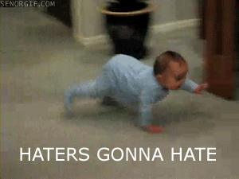
0.19 Grammaire des (psycho-)linguistes
0.19.1 Une grammaire dans la tête
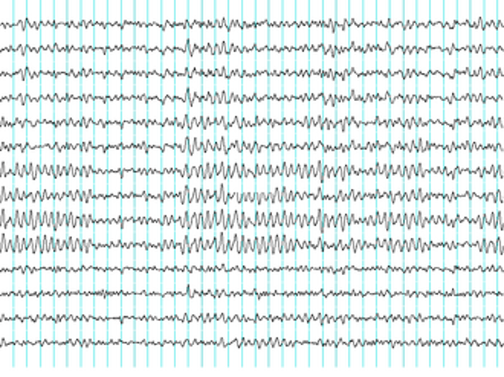
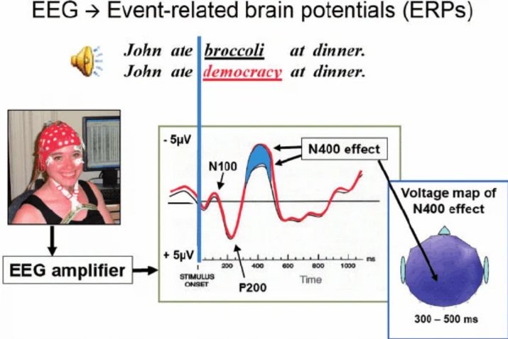
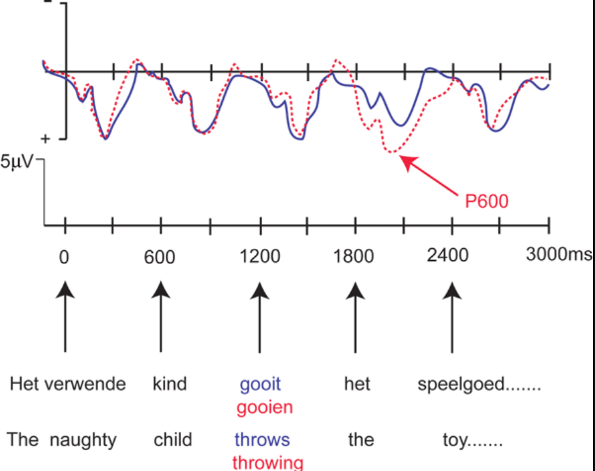
0.19.2 Pas de grammaire à l’oral ?
Les formes de la langue orale peuvent surprendre mais elles suivent une grammaire.
L’oral suit, en général, les mêmes règles que l’écrit
Certes, on entend moins l’accord, mais il est bien présent dans la grammaire de l’oral.
Elle mange. /ɛl mɑ̃ʒ/ >< Elles mangent. /ɛl mɑ̃ʒ/
Elle a mangé. /ɛl a mɑ̃ʒe/>< Elles ont mangé /ɛlz ɔ̃ mɑ̃ʒe/
Pas moins complexe que l’écrit
- Constructions clivées : “C’est moi qui joue.” vs “je joue”
0.20 La notion de faute
” Qu’on s’en réjouisse ou qu’on le regrette, la langue présente des usages multiples, qui varient en fonction des aires géographiques, des locuteurs, mais aussi, pour un même locuteur, ou une même locutrice, en fonction des situations ”
- GGF, 2021, p. XV
La perspective cognitive / d’apprentissage :
L’apprentissage de la langue, un manque d’attention ou une pathologie.
On qualifie cet écart d’erreur.
La perspective prescriptive / des puristes :
Le non-respect des règles établies et de la norme institutionnelle.
On qualifie cet écart de faute.
La perspective de la linguistique descriptive :
Ces formes sont analysées comme des variantes.
Elles s’inscrivent pleinement dans la structure et la dynamique diachronique de la langue, au sein de laquelle elles existent souvent depuis longtemps.
1. La structure « Tu fais quoi ? »
Le préjugé : « Ce n’est pas correct, ce n’est pas français. »
La réalité : Cette tournure ne vient pas d’une autre langue : c’est bel et bien du français populaire et parlé, ancré dans l’usage.
2. La locution « Malgré que »
Le préjugé : Souvent condamnée par les grammairiens puristes.
La réalité : Elle existe et est attestée dans la langue française depuis le XVIIe siècle.
0.20.1 Des règles arbitraires ?
Pour certains, la grammaire est avant tout une question de respect.
La position d’Alain Bentolila
Le linguiste Alain Bentolila affirme qu’il faut :
« Apprendre à respecter les règles de la langue. »
Il ajoute également que :
« Les règles linguistiques sont arbitraires et n’autorisent, par leur nature même, aucune hypothèse, aucun questionnement. »
0.20.1.1 Analyse critique de la citation
L’arbitraire du signe : Cette affirmation fait référence à l’arbitraire du signe (le lien entre le mot et l’objet qu’il désigne est conventionnel).
Important
Le Signe Linguistique selon Ferdinand de Saussure (1857-1913)
Le signe linguistique est défini comme l’union entre un « signifiant » et un « signifié » représentant un référent.
Les composantes du signe
Le signifiant : Le modèle sonore ou l’image acoustique (représenté ici par l’onde sonore).
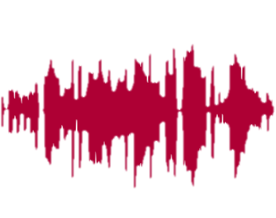
Le signifié : Le concept ou la représentation mentale (représenté ici par la silhouette rose du cheval).
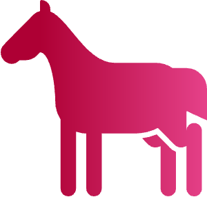
Le référent : L’objet du monde réel auquel le signe renvoie (le véritable cheval).
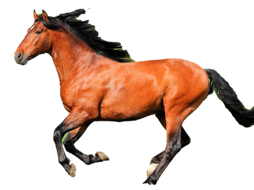
- La structure du système : En revanche, cela ne s’applique pas à l’organisation des signes en système linguistique. Cette organisation repose sur des règles générales et logiques, et non sur un choix purement arbitraire.
Si [la grammaire] se trouve opposée à l’usage, tant pis pour elle, c’est sa faute et elle doit se réformer.
- Claude Buffier
0.20.2 Linguistes vs Puristes
Les Linguistes (Approche scientifique)
Règles robustes : Basées sur des régularités observables et les grandes tendances de l’usage.
Accessibles : Faciles à apprendre car elles suivent la logique naturelle de la langue.
Explications factuelles : Justifiées par l’histoire de la langue ou le contact entre variétés proches.
Gestion de la variation : Analysent les changements en intégrant leur sens social (identité, milieu).
Les Puristes (Approche prescriptive)
Contrôle de l’usage : Recommandent ou bannissent des formes linguistiques.
Bases subjectives : S’appuient sur des critères pseudo-juridiques, moraux ou esthétiques.
Jugements de valeur : Pratiquent la hiérarchisation plutôt que la description.
Question centrale : Qui sont ces « juges » qui s’octroient le droit de fixer les règles de grammaire ?
0.21 Les règles
0.22 Les règles des linguistes
Analyse de la variation :
Les linguistes d’aujourd’hui ne doivent pas choisir, parmi les variantes, celle qui est la « meilleure ».
Ils observent la véritable diversité des usages réels.
Avancées technologiques :
- Cette observation est facilitée par le développement de grands corpus (contrairement aux grammairiens du XVIIᵉ siècle).
Variabilité des règles (Étude de Shana Poplack) :
Shana Poplack a compilé 163 grammaires écrites entre 1530 et 2000.
L’étude montre clairement que les règles sont variables selon les époques et les auteurs, notamment sur :
Quel verbe doit être suivi d’un subjonctif.
La motivation du choix entre le futur simple et le futur périphérique/proche (aller + infinitif).
Le choix entre les pronoms « nous » et « on ».
La Grande Grammaire du Français, 2021
Démarche scientifique et descriptive :
Approche volontairement descriptive et non prescriptive.
Analogie scientifique : De même qu’en biologie on observe et décrit l’ensemble des organismes (poissons, bactéries) sans sélectionner uniquement les « plus beaux » spécimens, le linguiste étudie tous les états de la langue.
Inclusivité et diversité des usages :
- Prise en compte de la totalité des manifestations linguistiques (oral, écrit, communications numériques, etc.).
Perspective francophone globale :
- L’étude ne se limite pas au français de France, mais embrasse l’ensemble de la francophonie.
Avertissement
Le français de référence
Plutôt que de parler de français standard longtemps associé au parler parisien des lettrés et de la bourgeoisie, les linguistes préfèrent aujourd’hui utiliser les notions de français ordinaire ou de français de référence.
Par français de référence, on entend l’ensemble des usages qui ne sont pas limités sur le plan social ou régional, et dont les règles sont partagées tant à l’écrit qu’à l’oral.
0.22.1 Traitement de la variation en linguistique
Hétérogénéité de la langue :
- La langue n’est pas un système monolithique ou homogène.
Constat des linguistes :
Les linguistes observent plusieurs variantes valides.
Ces variantes sont parfois partagées par des régions géographiquement très éloignées.
Exemples de variation géographique (diatopique) :
Structure comparative :
Variante observée : « Au plus il lit, au plus il dort »
Variante standard/alternative : « Plus il lit, plus il dort »
Régions concernées : Provence, Belgique.
Ordre des mots (infinitif et pronom/objet) :
Variante observée : « J’ai laissé sortir mon fils »
Variante alternative : « J’ai laissé mon fils sortir »
Régions concernées : Canada, Antilles, Bretagne.
0.22.2 Variantes et registres
L’histoire de la grammaire française s’est accompagnée d’un rejet des phénomènes de variation régionale et sociale au profit de la notion de norme, ou de français standard, qui considère qu’une façon de parler est supérieure aux autres.
- GGF, 2021, p. XXVII
Ne me faites pas dire ce que je n’ai pas dit…
Principe d’adaptation :
- La langue s’adapte au contexte.
Ce que les puristes qualifient de « fautes » constitue souvent des variantes stylistiques évaluées par les linguistes selon le niveau de formalité ou leur sens social, par exemple :
Style informel : Échanges avec des proches, conversations de tous les jours.
Style formel : Présentation de résultats de recherche à l’université, écrits officiels.
Les règles prescriptives sont en fait plus souvent des règles de savoir-vivre et de politesse : vous ne venez pas en cours en maillot de bain, et je ne viens pas en tongs… on ne va pas non plus à la piscine en smoking.
Il faudrait peut-être considérer le bon usage comme l’usage qui s’adapte d’une situation à l’autre.
En sociolinguistique, on distingue :
Prestige manifeste : Utilisation des formes reconnues et valorisées par la norme officielle.
Prestige latent : Emploi de formes blâmées par la norme comme signe d’appartenance au groupe. Les institutions de la langue française
0.23 Les règles puristes
Valorisation d’un état de la langue disparu :
Il existe souvent une valorisation d’un état de la langue aujourd’hui disparu.
Conséquence : culpabiliser l’usage contemporain et majoritaire au profit de cet état disparu.
Exemple (Subjonctif imparfait après un verbe au passé) :
Usage contemporain/majoritaire : « Il fallait que tu viennes »
Usage historique/disparu : « Il fallait que tu vinsses »Concept théorique :
- Arnold Zwicky nomme ces règles des « règles zombies » (zombie rules).
Distinction des règles selon Geoffrey Pullum
Règles zombies (zombie rules) :
- Règles qui ont, à un moment donné de l’histoire de la langue, réellement fait partie du système linguistique.
Règles croquemitaines (bogeyman rules) :
- Règles totalement fictives ou inventées, qui n’ont jamais représenté le fonctionnement réel de la langue (conçues uniquement pour faire peur ou imposer une norme artificielle).
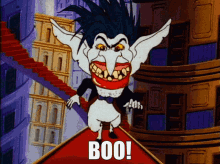
Le paradoxe des puristes
Ralf Vogel :
Si on dit qu’il ne faut pas dire quelque chose, ça veut dire qu’on le dit et cela fait partie de la langue.
La proscription d’une forme linguistique par les puristes apporte la preuve empirique de son existence et de son usage dans la langue réelle.
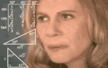
0.24 Évolution de la grammaire
La langue française n’est pas fixée et ne se fixera point. […] Les langues ni le soleil ne s’arrêtent plus. Le jour où elles se fixent, c’est qu’elles meurent.
- Victor Hugo
0.24.1 La grammaire évolue
Vitesse d’évolution :
- La création de mots est beaucoup plus rapide que les changements de la grammaire.
Les mots grammaticaux :
- La création de mots grammaticaux prend des siècles.
0.24.1.1 La négation (depuis le XVIIIᵉ siècle)
Utilisation historique de petits mots : pas, rien, goutte, mie (cf. mica en italien).
Seuls pas et rien sont restés.
0.24.1.2 Les structures interrogatives
Évolution des formes interrogatives :
Plusieurs formes interrogatives étaient déjà utilisées à la Renaissance.
L’usage du mot interrogatif en position finale (ex. « Tu vas où ? ») est en revanche très récent.
Critique de la vision puriste :
Les puristes fantasment un « âge d’or » passé de la langue.
Pourtant, l’ancien français était déjà très différent du français d’aujourd’hui.
Continuité historique de la transformation linguistique :
L’ancien français est lui-même issu d’une évolution du latin.
Cette transition s’est accompagnée du développement de nouvelles structures : davantage de prépositions, apparition/multiplication des pronoms sujets et des articles par rapport au latin.
En ancien français, on observe la perte de la plupart des marques de cas du latin, compensée par le passage à un ordre des mots fixe.
Exercice
Relevez ici, dans les propos misogynes de Philippe de Novare, quelques éléments propres à l’ancien français :
« A fame ne doit on apanre letres ne escrire si ce n’est especiaument pour estre nonnain. »
💡 Affichez les réponses
- absence d’article
- l’ordre des mots libre (a fame)
- sujet (on) après le verbe
- ne suffit à exprimer la négation
- nonnain correspond au complément vs nonne comme sujet
Sytématisation des pronoms et articles :
- Ce n’est qu’à la Renaissance (XVIᵉ siècle) que l’emploi des articles et des pronoms sujets devient systématique.
Élision des adjectifs possessifs féminins (XVIᵉ–XVIIᵉ siècles) :
Les adjectifs possessifs féminins (ma, ta, sa) s’élidaient directement devant une voyelle, au lieu d’employer les formes mon, ton, son.
Exemples : Ronsard ou Molière écrivent couramment « m’amour » (pour mon amour) ou « m’amie » (pour mon amie).
Usages négatifs et syntaxiques au XVIIᵉ siècle :
Emploi de la négation : Utilisation courante de point.
- Exemple : « Je ne veux point ».
Placement du complément : Le complément était encore placé avant une suite de verbes.
- Exemple : « Je vous veux voir ».
Action des grammairiens :
- Certaines formes très répandues au XVIIᵉ siècle, réprimandées par des grammairiens comme Vaugelas, ont fini par disparaître de l’usage standard.
0.25 D’où viennent les règles des puristes ?
Le mythe du « siècle d’or » :
On associe souvent le XVIIᵉ siècle à un âge d’or de la langue française (porté par Molière, Racine, La Fontaine…).
Malgré la grandeur de ces auteurs, peu de grammairiens de l’époque possédaient une vue d’ensemble sur le fonctionnement réel de la grammaire.
Leurs travaux se limitaient le plus souvent à des remarques anecdotiques.
L’apport de Vaugelas (1647) :
Un objectif politique : Sa démarche répond à une volonté politique affirmée de distinguer le parler de l’élite parisienne du reste de la population.
La notion de « bon usage » : Vaugelas cherche à formaliser et imposer le « bon usage », mais s’appuie sur une définition circulaire.
Une définition circulaire
Définition circulaire = on définit une notion en utilisant cette même notion ou une notion qui dépend d’elle.
Bon usage
↓
parler de ceux qui parlent bien
↓
ceux qui parlent bien = ceux qui utilisent le bon usage
↓
Bon usage
→ Le bon usage est donc celui de ceux qui parlent bien, mais on considère que ceux qui parlent bien sont précisément ceux qui utilisent le bon usage.
→ La définition tourne en rond : « le bon usage est celui de ceux qui parlent bien ».
Note
- Ces grammairiens ont néanmoins eu une importance non négligeable sur la langue française.
- Ce sont, par exemple, eux qui insistent pour accorder le verbe avec le sujet comme dans « ce sont eux », contrairement à la règle générale « c’est eux ».
- Action largement latinisante et régressive (Pierre Guiraud).
- On fixe des formes en voie d’élimination et on introduit des calques latins qui ne se sont jamais intégrés au système linguistique, comme dont et lequel.
- À l’inverse, certains penseurs comme Scipion Dupleix proposent une approche fondée sur la raison et l’usage, mais ils ne sont pas académiciens → ils ne sont pas entendus.
0.25.1 De l’académie française ?
Institut de France, fondation en 1795
« L’académie française a été instaurée par Richelieu gardienne de la langue » — Académie française
↔︎
« Depuis le XIXe siècle, l’académie française ne suit plus l’évolution de la langue » — Les linguistes atterrés
0.25.1.1 Quel est son rôle ?
Institution d’Ancien Régime fondée en 1635
Selon ses statuts, elle doit rédiger ” promptement ” 😝 un dictionnaire et une grammaire dans le but de ” donner des règles certaines à notre langue et à la rendre pure, éloquente et capable de traiter les arts et les sciences
1er dictionnaire en 1694: objectif élitiste assumé
- pour “distinguer les gens de lettres d’avec les ignorants et les simples femmes”
Au total 9 éditions, la dernière en 2026
Mais beaucoups de critiques !
Un best-of : 😅
bisou absent
mail est défini comme gros marteau ou une promenande plantée d’arbres
femme est définie comme capable de concevoir et de mettre au monde des enfants
racisme
homophobie
etc.
L’Académie n’a jamais publié une grammaire
Jusqu’au XIXe siècle, ils ont bien essayé d’avoir un regard (timide) mais critique sur l’orthographe et ont simplifié certaines graphies
Ex. pluriels en -x comme loix et roix
Ex. certains -h comme autheur et rhythme
0.25.1.2 Fin XIXe siècle
Gaston Paris est un exemple d’académicien non puriste
L’enseignement du français doit ” sortir de ces marécages ” de règles, ” être plus fructueus pour l’esprit et un peu moins dangereus pour le sens ”
Il applique un réforme de l’orthographe, par exemple, fructueus, dangereus
Erreurs de copistes -us abrégé en -x
Comparez avec des mots récents comme sous, pneus, landaus
Dernier spécialiste de la langue siégeant à l’Académie
Aujourd’hui, à votre avis, combien de linguistes siègent à l’Académie ?

0.25.1.3 XVIIIe siècle

0.25.1.4 XXe siècle
La façon dont écrivent actuellement la plupart des Français et notamment les futurs professeurs […] est effrayante […].
- Émile Faguet

0.25.1.5 XXIe siècle
À notre époque, chacun peut le constater la langue française est menacée. De l’extérieur, par la montée en puissance de l’anglo-saxon. De l’intérieur, par un délabrement plus grave encore et aux causes multiples
- Jean d’Ormesson
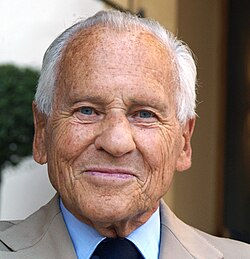
0.25.1.6 Depuis 2011
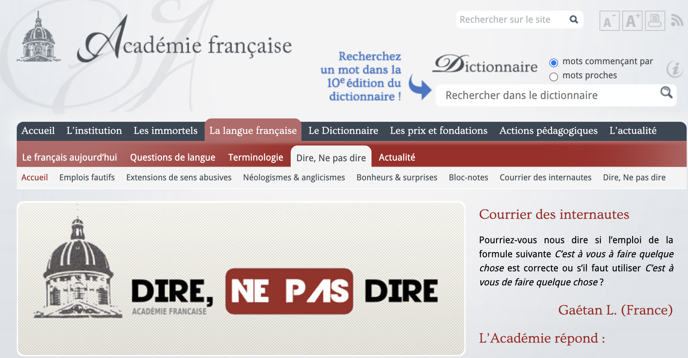
0.25.1.7 Le pouvoir de l’Académie
Sur la langue, aucun…
Mais un prestige et une influence qui ont un impact
Empêché l’application de l’arrêté du ministre Leygues de 1900 (soutenu par des linguistes)
Bloqué la féminisation des noms de métiers jusqu’en 2019
Contrairement aux académies espagnole 🇪🇸, suédoise 🇸🇪, polonaise 🇵🇱, roumaine 🇷🇴, etc., elle n’a pas pour but de nous instruire sur la langue et son évolution
Elle cherche à ” entretenir une certaine idée de la France, et nourrir la peur du déclin ” (abeilleGrammaireSeRebelle2026?)
0.25.2 Le rôle de la littérature
0.25.2.1 Révolution française
Le bon usage ne peut être associé à celui de la cour.
Il faut donc trouver un autre modèle…
… celui de la littérature

0.25.2.2 Bescherelle
1834 : Grammaire nationale ou grammaire de Racine, de Bossuet […] et de tous les écrivains les plus distingués de la France


Aujourd’hui encore, on fait comme si la langue française était la propriété des écrivains — « la langue de Molière ».
Mais il ne faudrait pas oublier que l’écriture de Molière n’était pas homogène. Il ne fait pas parler les nobles comme la noblesse.
0.25.2.3 Le Bon usage
- En 1936, Maurice Grevisse publie Le Bon Usage, où il compile la grande variété des usages littéraires des écrivains du XIXe et du début du XXe siècle.
Exercice
Relevez, dans les exemples suivants, les formes que les puristes auraient considérées comme fautives :
- Balzac veut écrire « c’est eux »
- Gide défend « malgré que ».
- Molière utilise « comment est-ce que ».
- Madame de Sévigné : « ce que j’ai besoin »
- Voltaire : « un espèce de miracle ».
- Chateaubriand : « qui se sont succédés ».
- Flaubert : « se rappeler de ».
- Marcel Proust : « en vélo ».
💡 Affichez les réponses
- Balzac → ce sont eux
- Gide → bien que / malgré le fait que
- Molière → Comment vais-je…
- Madame de Sévigné : ce dont j’ai besoin
- Voltaire → une espèce de miracle
- Chateaubriand → qui se sont succédé
- Flaubert → se rappeler
- Proust → à vélo
Peut‑on les accuser d’abîmer la langue française ?
La seule différence est peut‑être que les variantes stigmatisées sont rarement majoritaires en littérature.
La littérature reste un reflet imparfait des usages.
0.25.2.4 Le rôle de l’école
L’école est évidemment un vecteur de normes.
Au XIXᵉ siècle, avec la généralisation de la scolarisation, se multiplient aussi les dictionnaires et les livres de grammaire.
Époque où les langues régionales sont encore parlées à la maison → on veut former des francophones, ou plutôt des francographes.
On fait des cacographies et des dictées.
L’enseignement de la langue se base essentiellement sur l’écriture : homonymes, accords, etc.
En 1880, Jules Ferry, ministre de l’Instruction publique, ne veut plus de « la vieille méthode grammaticale » et de « l’abus de dictées ».
À la fin du XIXᵉ siècle, les manuels sont déjà critiqués par des linguistes comme Gaston Paris.
En 1900, le ministre Georges Leygues publie un arrêté ordonnant de tolérer des tournures bien ancrées dans l’usage et que les écrivains emploient eux aussi → mais l’Académie, choquée de ne pas avoir été consultée, proteste.
En 1901, un arrêté modifie le précédent sous la pression de l’Académie.
En 1976, René Haby promeut un arrêté de tolérance grammaticale.
On a créé petit à petit un fossé entre l’expression de la langue à la maison et la langue scolaire, qui finit parfois par se limiter aux productions scolaires.
0.25.2.5 Le rôle du numérique
Aujourd’hui, rôle des correcteurs et des programmes de traitement de texte qui nous indiquent ce qui serait des erreurs.
De même, les outils d’IA sont entraînés sur des textes écrits et sans doute sur des grammaires puristes.
Le Chat de Mistral est plus nuancé que l’Académie française et fait une distinction entre oral et écrit quand on lui pose des questions de grammaire.
Quand on demande à ChatGPT (en tout cas, en 2025), il parle de niveaux de formalité, mais répète la règle puriste.
Il n’y a donc pas de source unique pour les règles puristes → c’est un ensemble très hétéroclite.
0.26 Pourquoi fait-on des fautes ?
Parce que tous les locuteurs ont besoin d’adapter leur langue à la situation.
Parce qu’on a tendance à suivre une logique plus systémique et à ignorer les exceptions → on généralise les règles.
0.26.1 À cause de l’oral ?
Il existe plusieurs sortes d’oral : texte préparé ou non.
Conversation spontanée : si elle est transcrite, elle est presque illisible.
Quand l’oral est écrit, il est presque toujours réécrit.
Mais à l’oral, il y a quand même des règles.
Les tics de langage sont propres à l’oral : enfin, bon, voilà, etc. → ils servent à structurer la parole.
L’oral contient souvent des jurons, mais ces mots parfois tabous nourrissent l’expression d’une certaine variété de langue.
0.26.2 À cause du peuple ?
Au XVIe siècle, les langues sont dites vulgaires (terme négatif à l’époque, mais qui vient de vulgus = la foule), par opposition à la langue noble qu’est le latin.
Note
Aujourd’hui, on parlerait plutôt de langues vernaculaires.
Nous parlons de langues qui se sont développées à partir du latin classique, mais qui ne lui ressemblent plus.
De vulgari eloquentia, de Dante Alighieri.
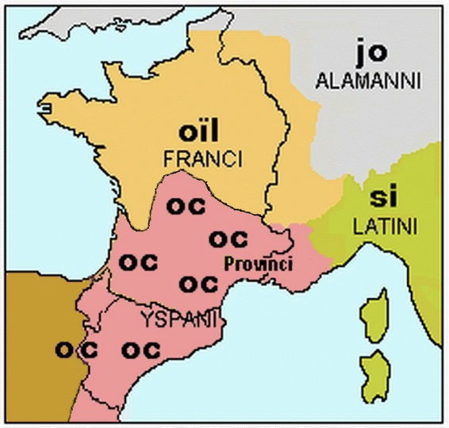
Le français populaire est généralement connoté négativement, alors que la musique populaire est plutôt connotée positivement.
Ferdinand Brunot (1932) : « La langue peut s’enrichir des créations, souvent excellentes, parce qu’elles sont instinctives, de l’esprit populaire.
Nous avons tous plusieurs registres et plusieurs accents.
0.26.2.1 Les francophones qui ont accès à plusieurs variantes :
établissent des correspondances entre les différences sociales et les formes linguistiques ;
font attention à la représentation sociale qu’ils veulent donner d’eux-mêmes.
→ D’où le désir de certains de se révolter face à une domination linguistique, avec l’adoption d’une forme de prestige latent.
0.26.3 La faute de l’écriture inclusive ?
On fait souvent des reproches à l’écriture inclusive.
Les grammairiens ont contribué à une masculinisation de la langue à partir du XVIIᵉ siècle.
Par exemple, la règle du pronom masculin pour l’attribut : avant, on pouvait dire « je la suis » au lieu de « je le suis ».
0.26.4 Le rôle du numérique
Correcteurs et traitements de texte :
- Aujourd’hui, les correcteurs orthographiques et les logiciels de traitement de texte jouent un rôle prescripteur en nous indiquant ce qu’ils considèrent comme des erreurs.
Modèles d’IA et données d’entraînement :
- Les outils d’intelligence artificielle sont entraînés principalement sur des textes écrits et, très probablement, sur des grammaires à tendance puriste.
Comparaison des modèles d’IA face aux questions de grammaire :
Le Chat (Mistral) : Adopte une approche plus nuancée que l’Académie française et établit une vraie distinction entre la langue orale et la langue écrite.
ChatGPT (état observé en 2025) : Mentionne les niveaux de formalité, mais finit par répéter la règle puriste traditionnelle.
Quiz time !!!
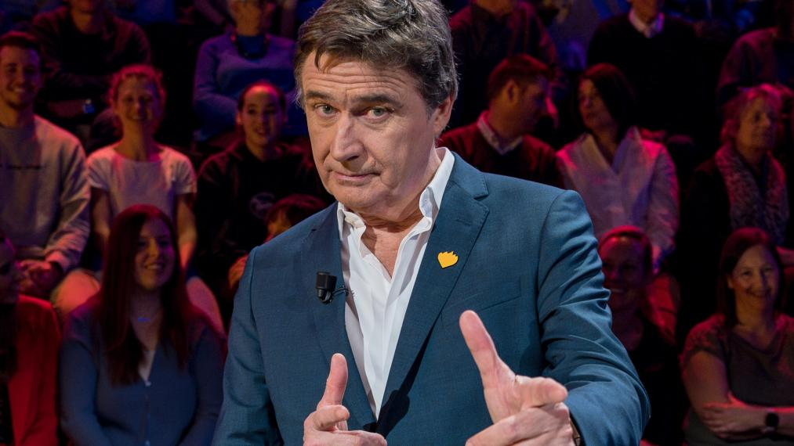